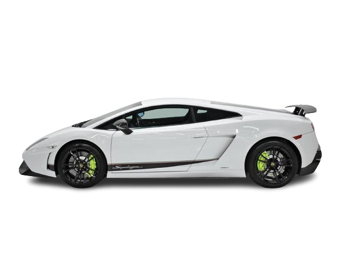
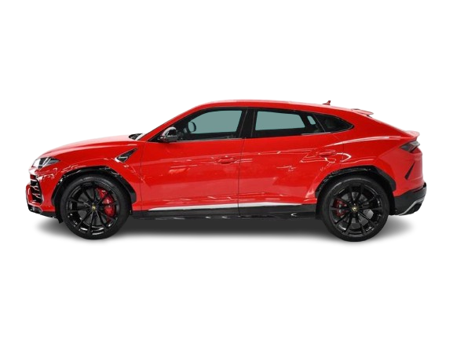
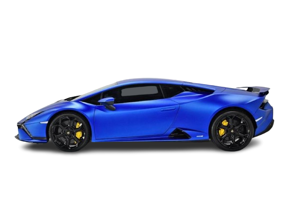

único dono
Gallado
O Gallardo foi um modelo esportivo da Lamborghini, tendo sido lançado em 2004. É o primeiro modelo da marca com motor V10.

único dono
Urus
O Lamborghini Urus é um SUV produzido pela marca italiana Lamborghini, apresentado no Auto China em 23 de abril de 2012 e lançado em 2018.

único dono
Huracán
O Lamborghini Huracán é um automóvel desportivo construído pela empresa italiana Lamborghini, substituindo o lendário Gallardo.
01